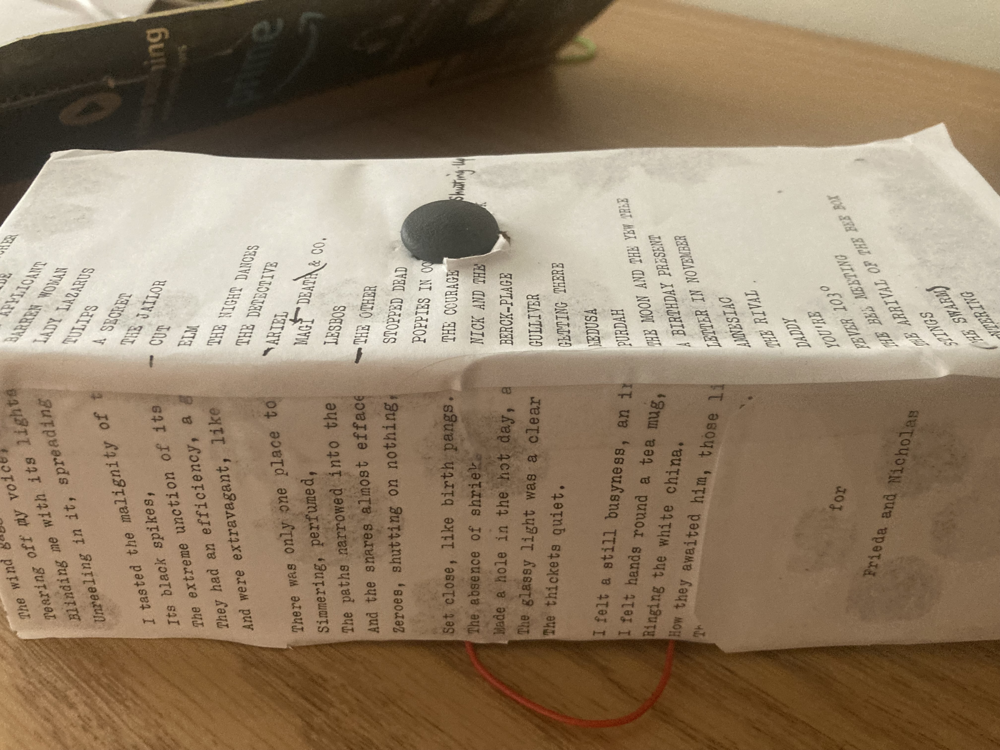
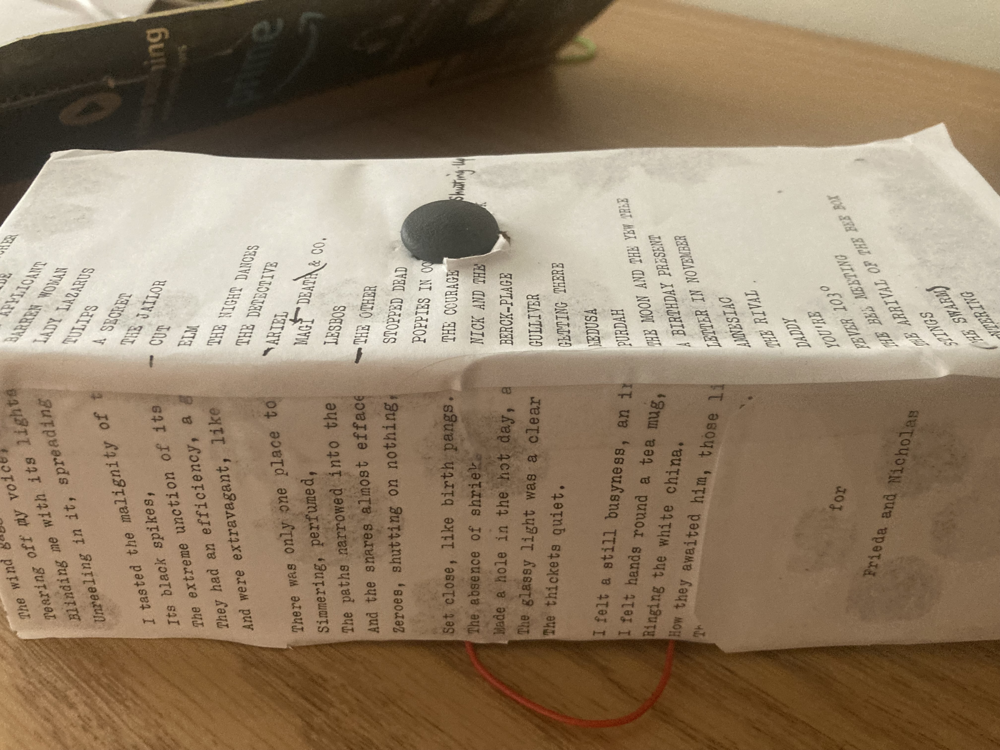

Ariel is an interactive exploration of Sylvia Plath's Ariel. There are five recording selected: "Berck Plage", "Cut", "Lady Lazarus", "The Applicant", and "Tulips". There is no particular reason for the amount of poems selected, I just chose some of my personal favorites. Each of these readings are from Plath, surrounding the user in her voice and her words. The user can use either a ESP32-mounted joystick or WASD to move around the Ariel soundscape, moving from poem to poem as they prefer.
I made the enclosure out of Krazy glue, tape, cardboard, and paper. I printed out some poems from Ariel and posted them around the enclosure. Within the enclosure there is a simple breadboard which has the same design as the one used for the joystick lab-- the power and ground are connected, the x-sensor is connected to pin 13, and the y-sensor is connected to pin 12. The Z-sensor is not connected as we are only traversing a 2D space in the soundscape.
 

The code flashed onto the esp32 can be found at "joystick.ino" which was borrowed from Chapter 14 of the "Freenove Ultimate Starter Kit For ESP32", which can be accessed for free at https://github.com/Freenove/Freenove_Ultimate_Starter_Kit_for_ESP32/blob/master/C/C_Tutorial.pdf. If your ESP32 does not have pins 12 or 13, or you otherwise wish to change the location of the xyz pins, you can simply change the values in "xyzPins[]". For example, if you wished the x pin to be associated with 15, y with 13, and z with 20, you would replace the current initialization with "int xyzPins[] = {15,13,20}".
The Javascript code found in "audio.js" is largely borrowed from https://www.marksantolucito.com/COMS3930/spring2023/serialVisual.html for handling and processing WebSerial and http://www.marksantolucito.com/COMS3430/fall2022/3dpanning/ for handling the 3d Panner and loading audio buffers. In handling the WebSerial, the values are first split by commas to more easily access the values. Sometimes the messages sent of serial are only partial, so there is a length check to ensure that only complete messages are accepted. The incoming x and y-values are then parsedand added to the global x and y variables that indicate the speaker's position. When a user clicks the play button, all of the samples are loaded, connected with their corresponding panner, and started. Their starting positions are stored in the "startingPositions" variable. In the "move" function, every panner position is updated relative to the global x and y-values. So, the user does not move around the soundscape, but the soundscape moves around the user. This code is then run every frame thanks to requestAnimationFrame.
If you want to recreate this project, or build upon this project to make your own unique creation, it is a very simple process. First, you need to pull the code from the github linked on the main page. If you are unable to access the github for whatever reason, you can copy the code from the inspect element page, copy and pasting "audio.js", and "index.html". If you are using VSCode, I reccomend gettin the "Live Server" extension, as it makes testing html and javascript on your local machine much easier. If you successfully managed to pull the code, everything should work aside from the "Connect ESP" functionality. If you want to change the samples that play, or their location, just change the variables "sampleList", and "startingPositions". For the construction of the hardware, you need an ESP32, I specifically used the LilyGo ESP32-TTGOT1 with an embedded screen. Flash the "joystick.ino" code onto your ESP32 using either the Arduino IDE or the Platform IO extension for VSCode. Connect the 3V pin on the ESP32 to the 3V pin on the joystick. Connect ground to ground. Connect xPos to pin 13 and yPos to pin 12, or whatever you set their values to in "joystick.ino". Plug the ESP32 into your computer. When you click "Connect ESP", there should now be an option indicating your ESP. Click on the connection, and then press Play. You should now be able to move around the soundscape with your joystick. If there are any issues, check the inspect element tab, it should be actively printing x and y-values to let you know if the movement is being correctly monitored. Hope you enjoy!